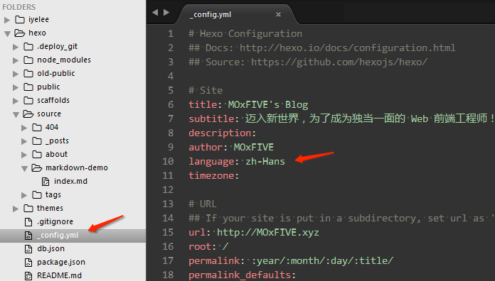

语言切换
https://hexo.io/docs/internationalization.html
在站点配置中填写对应语言的代码，留空默认显示简体中文，但建议指定语言以免显示有误
# Hexo Configuration
## Docs: http://hexo.io/docs/configuration.html
# Site
language: zh-Hans

Available Languages | 目前可用语言
| Code | - | - | Contributor(s) |
|---|---|---|---|
| en | English | 英语 | MOxFIVE |
| zh-Hans | Chinese (Simplified) | 大陆简体 | MOxFIVE |
| zh-Hant-HK | Chinese (Traditional) | 港澳繁體 | MOxFIVE |
| zh-Hant-TW | Chinese (Traditional) | 台灣正體 | MOxFIVE |
欢迎协助完善翻译！